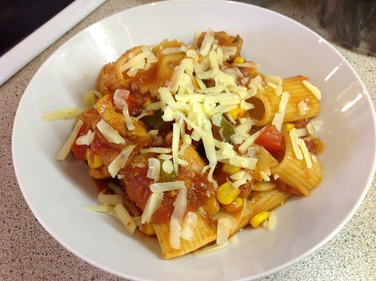

Patsa Recipe

Description of Pasta
This recipe is for a Spicy Chicken Pasta. A few weeks ago, I wanted a quick pasta dish but with a little spice.
So I decided to use up a spicy pasta sauce I had in the cupboard, and add chicken and vegetables to it.
It turned out really well topped with grated cheese, and was the ultimate comfort food since it was really
cold on that day.
Ingrediants
- Sweetcorn
- Dolmio Spicy Bolognese Sauce
- Salt and Pepper
- Vegetable Oil
- Pasta
- Onion
- Red Bell Pepper
- Green Bell Pepper
- Boneless Chicken Pieces
- Red Chilli Powder
- Dried Oregano
- Cheddar cheese
- Water
Steps:
- Boil a large pan of salted water, and add 2 mugs pasta. Cook according to packet instructions. You can use any pasta you like - I used a large rigatoni.
Once the pasta is cooked, drain and set aside.
- Take 1 large peeled and sliced onion.
- Heat a few tablespoons vegetable oil, and add the sliced onions.
- Stir-fry until golden brown.
- Add 1 pound boneless chicken pieces.
- Stir-fry the chicken until it turns white.
- For the spices, take:
1 teaspoon salt
1 teaspoon black pepper
1 teaspoon red chilli powder
1 teaspoon dried oregano
- Add the spices to the pan.
- Stir until the chicken is coated in the spices.
- Add 1/2 cup water.
- Stir-fry on medium heat until the water has dried out.
- Take 1 chopped red and green bell pepper,
Take 2 cups frozen sweetcorn, or you
could use 1 whole tin of sweetcorn
- Add the chopped peppers and sweetcorn to the pan.
- Cook for 3 minutes.
- Next, take 1 jar of Dolmio Spicy Bolognese Sauce.
Or you could any other pasta sauce you have -
just add more spice and mix and stir
- Add 1/2 cup water, and bring to the boil. Cover and simmer for 10 minutes
- Add the cooked pasta and Gently stir in.
- Serve hot topped with grated Cheddar cheese! This dish will cheer up any gloomy and cold day - I hope you give it a try!
Homepage